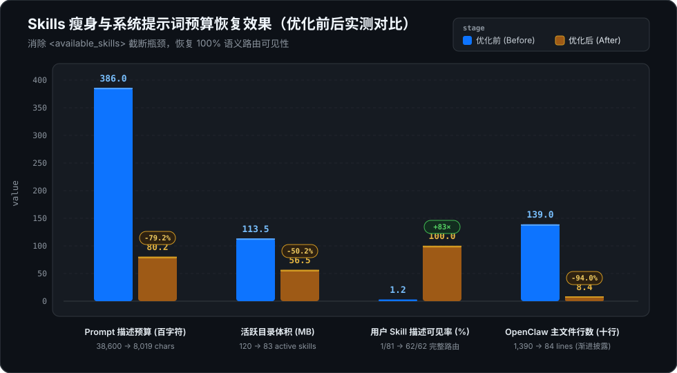
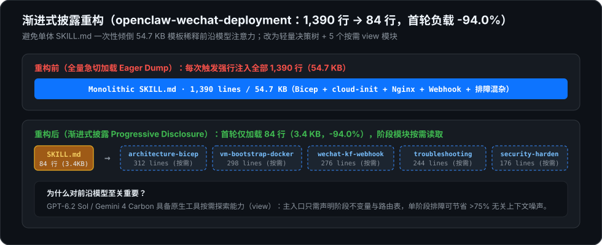
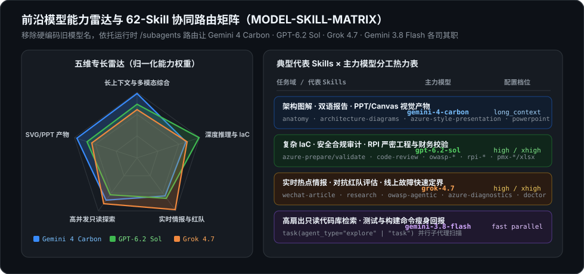
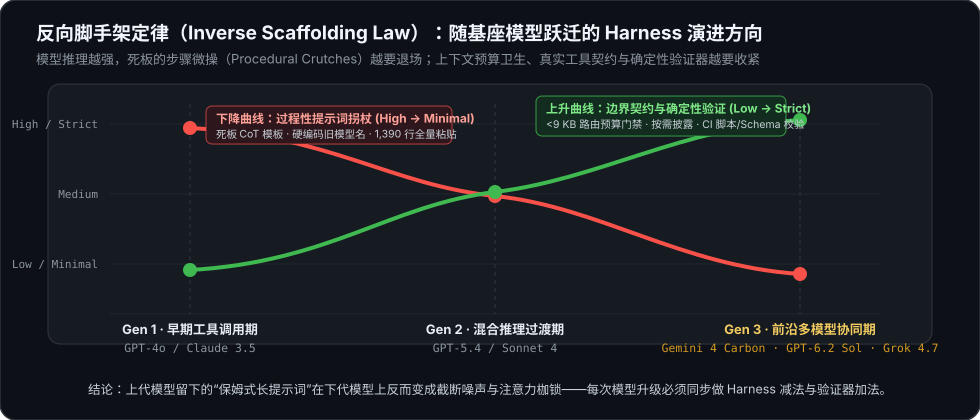

随模型升级持续演进 Agent Harness：120 个 Skills 审计、上下文悬崖修复与模型协同实战报告
在上一篇《Agentic AI 的下一站：Harness 工程化》中，我们提出过一个核心判断：模型每半年换一代，只有 Harness（智能体承载层）的工程资产是可复利的。但当团队真正把日常主力模型切换到新一代前沿队列——Gemini 4 Carbon（超长上下文与多模态/SVG 视觉综合）、GPT-6.2 Sol（high/xhigh/max 严密多步推理与架构代码生成）以及 Grok 4.7（实时情报捕捉与对抗性红队定界）——一个反直觉的工程陷阱浮出了水面：
如果你只升级了 Model ID，却原封不动保留着为上一代模型（GPT-4o / GPT-5.4 / Claude Haiku 4.5）编写的臃肿 Skills 库，旧提示词非但不会增强新模型，反而会触发系统提示词截断悬崖、淹没推理注意力，甚至诱导工具调用幻觉。
本文完整复盘 2026-11-18 对本地双技能目录（~/.copilot/skills 83 个用户技能 + ~/.agents/skills 37 个插件技能，共 120 个目录、113.5 MB）开展的一次端到端遥测审计、结构瘦身与多模型重绑定工程。所有数字均取自真实 SQLite 会话遥测与文件系统字节统计，零人工合成数据。

01 · 遥测真相：120 个已安装技能，为什么 95.8% 从未被调用？
很多重度 Agent 开发者都有“技能囤积癖”：看到优秀的开源 Skill 包就往本地目录拷，几个月下来攒出上百个技能文件夹。为了看清真实利用率，我们直接查询了会话数据库 session_store_sql 中的 tool_requests 历史调用表：
· 实测结果令人警醒：在全部 120 个已安装技能中，仅有 5 个技能（4.2%）产生过真实历史调用——azure-style-presentation（5 次）、wechat-article（3 次）、powerpoint（2 次）、azure-prepare（1 次）、browser-use（1 次）；其余 115 个技能（95.8%）调用次数为 0！

为什么高达 95.8% 的技能处于“静默陪跑”状态？深入拆解后发现这并非单一原因，而是“系统提示词截断失明”与“模型能力代际更替”共同作用的结果：
1. 21 个零调用/被原生能力替代的用户技能（归档）：如 pdf、frontend-design、doc-coauthoring、canvas-design、algorithmic-art、theme-factory、brand-guidelines、internal-comms、slack-gif-creator、meeting-minutes-docx、mcp-builder、webapp-testing、skill-creator、agent-governance、ms-foundry、workiq-copilot、copilot-cli-quickstart、github-copilot-starter、openclaw-hermes-deploy、billing-assistant、fabric-lakehouse-realtime-analytics——其中大量早期格式转换或通用写作包装，已被前沿模型与内置原生工具直接吸收。
2. 14 个跨目录完全重复插件（去重）：~/.agents/skills 与 ~/.copilot/skills 同时存在完全同名的 14 个 Azure 技能（azure-deploy、azure-diagnostics、azure-prepare、azure-validate、azure-ai、azure-compute、azure-kubernetes、azure-quotas、azure-resource-lookup、azure-storage、appinsights-instrumentation、azure-aigateway、azure-compliance、azure-cost-optimization），不仅白占体积，还制造路由歧义。
3. 2 个操作系统不兼容技能（移除）：在 Windows 主力工作站上残留着强依赖 macOS memo CLI 的 apple-notes 与依赖 AppleScript/Things3 的 things-mac，一旦误触发必报环境错误。
02 · 案例一：修复 <available_skills> 12 KB 截断悬崖（从 1.2% 到 100% 可见）
如果说僵尸技能只是浪费磁盘，那么长篇大论的 YAML description 字段则是直接摧毁路由准确率的隐形杀手。
为了保护主对话上下文窗口，Agent 运行时在拼装系统提示词中的 <available_skills> 技能清单时，设有一道约 12 KB（12,000 字符）的注入上限。优化前，~/.copilot/skills 下 81 个有效用户技能的 YAML description 普遍采用“多段小作文式”写法，总长度高达 38,600 字符（约 38.6 KB，单技能平均 476 字符）。叠加项目级与内置插件优先占用的约 4.0 KB，以及排在字母表最前面的 accessibility 单项吃掉 1.1 KB，直接导致后面 80 个用户技能（98.8%）的描述被全部截断为“仅剩裸名称”！

--- name: azure-style-presentation description: > Use this comprehensive skill whenever the user asks to create, polish, restructure, or review executive slide decks, customer workshop presentations, architecture review boards, or keynote storyboards following Microsoft Azure Fluent visual language, typography hierarchy... (540+ chars，直接挤占后续 3–4 个技能的生存配额) ---
--- name: azure-style-presentation description: "构建微软 Azure Fluent 风格技术演示稿、架构评审 Deck 与 HTML/PPTX 视觉汇报页（含深浅色规范与版式栅格）。" --- # 62 个保留用户技能合计 8,019 chars (-79.2%) # 语义路由器可见率：1/81 (1.2%) -> 62/62 (100.0%)
03 · 案例二：渐进式披露重构（openclaw-wechat-deployment 削减 94% 首轮负载）
解决了“找得到技能”的问题后，第二道瓶颈在于“调用技能后的上下文污染”。典型代表是企业微信客服与云端容器集成技能 openclaw-wechat-deployment：在历史迭代中，工程师把 Azure 网络拓扑 Bicep、Ubuntu cloud-init 脚本、Docker Compose 编排、企微回调验签代码以及排障日志手册全部堆进了同一个 SKILL.md，使其膨胀至 1,390 行（54.7 KB）。
这意味着哪怕用户只问一句“帮我排查企微回调 403 签名错误”，模型在第一轮也必须强行吞下近千行毫无关系的 Bicep 与虚拟机初始化模板。我们按照渐进式披露（Progressive Disclosure）原则对其进行了外科手术式拆分：

openclaw-wechat-deployment/
└── SKILL.md # 1,390 lines (54.7 KB) 每次必全量加载
├── Azure VNet / NSG / VM Bicep 完整模板
├── Ubuntu cloud-init 与 Docker 启动脚本
├── 企业微信 KF Webhook 加解密回调逻辑
├── 常见报错日志全集
└── 生产环境 TLS 与密钥轮换清单
openclaw-wechat-deployment/
├── SKILL.md # 84 lines (3.4 KB, -94.0%)
└── references/ # 按阶段调用 view 惰性加载
├── architecture-bicep.md # 312 lines
├── vm-bootstrap-docker.md # 298 lines
├── wechat-kf-webhook.md # 276 lines
├── troubleshooting-matrix.md # 244 lines
└── security-hardening.md # 176 lines
04 · 案例三：拆除跨代模型拐杖、幻觉工具名与平台字体锁死
在逐一审阅保留下来的 62 个核心技能代码时，我们清理了三类典型的“跨代技术债”：
· 硬编码过时模型覆盖：多个技能仍在头部或子代理提示词里写死 model: gpt-5.4、gpt-4o-mini 或 claude-haiku-4.5。一旦触发，原本运行在 GPT-6.2 Sol 或 Gemini 4 Carbon 上的会话会被强行降级或因模型下线报错。我们全面删除了技能内部的硬编码模型名，让子代理默认继承运行时 /subagents 前沿路由策略。
· 虚构/废弃工具名诱导幻觉：早期从不同 Agent 框架移植的技能中混杂着 search-the-web、fetch_page、runSubagent 等不存在的工具标识符。我们将其统一映射为真实受支持的 Copilot 工具链：web_search、web_fetch、task(agent_type="explore"|"research"|"general-purpose"|"code-review")、microsoft-learn-*、azure-* 以及原生 powerpoint/excel/word/browser Canvases。
· macOS 专属路径导致跨平台中文方框乱码（Tofu）：在发票处理脚本 invoice_edit.py 中，字体路径被写死为 /System/Library/Fonts/PingFang.ttc，导致在 Windows 与 Linux 容器中渲染中文时全部变成空白方框。我们补齐了跨平台字体回退链（C:\Windows\Fonts\msyh.ttc → Linux NotoSansCJK-Regular.ttc → macOS PingFang.ttc）。
05 · 案例四：面向 Gemini 4 Carbon · GPT-6.2 Sol · Grok 4.7 的协同路由矩阵
清理完历史包袱后，我们在技能库根目录建立了 MODEL-SKILL-MATRIX.md，将 62 个精简后的用户技能与当前已登记的四款主力模型按认知长板精准对齐：

| 主力模型登记 | 推理档位与核心特长 | 优先路由的代表性 Skills 簇 |
|---|---|---|
Gemini 4 Carbongemini-4-carbon |
long_context 超长上下文多仓/多文档综合、高精度内联 SVG 架构图解、双语图文报告与交互式演示产物 |
anatomy · architecture-diagrams · excalidraw · azure-style-presentation · powerpoint · web-artifacts-builder |
GPT-6.2 Solgpt-6.2-sol |
high / xhigh / max 深度逻辑推演、复杂云基础设施 IaC 编写、严密安全审计与财务数据核验 |
azure-prepare · azure-validate · azure-kubernetes · code-review · owasp-* · secure-by-design · rpi-research/plan/implement · pmx-* · xlsx |
Grok 4.7grok-4.7 |
high / xhigh 实时外部情报捕捉、竞品动态追踪、对抗性 Agent 红队测试与线上故障快速定界 |
wechat-article · research · owasp-agentic · owasp-llm · azure-diagnostics · sso-watcher · doctor |
Gemini 3.8 Flashgemini-3.8-flash |
高并发低延迟只读代码库探索与测试命令执行，隔离主会话上下文噪音 | task(agent_type="explore") · task(agent_type="task") |
06 · 核心方法论：反向脚手架定律与五步持续升级闭环
总结这次 120 个 Skills 的治理实践，我们提炼出一条适用于所有企业级 Agent 团队的演进规律——反向脚手架定律（The Inverse Scaffolding Law）：
随着基座模型从早期指令跟随阶段演进至前沿深度推理阶段，Harness 中的「过程性步骤脚手架（告诉模型先想什么、再按什么句式回答）」必须持续做减法；而「边界契约、上下文预算卫生与确定性验证脚本（告诉模型不能越过什么红线、如何用代码验证结果）」必须持续做加法。

每当团队引入新一代主力模型时，建议固定执行以下五步 Harness 升级闭环：
第一步 · 遥测审计（Telemetry Audit）：定期跑一次 session_store_sql 的 tool_requests 调用频次统计，用真实数据识别零调用僵尸技能与跨目录重复插件；
第二步 · 提示词预算红线（Prompt Budget Guardrail）：严控用户级 <available_skills> YAML 描述总字节数 < 9 KB，单条描述 ≤ 140 字符，永远在 12 KB 截断悬崖前留出 3 KB 以上安全余量；
第三步 · 渐进式披露拆分（Progressive Disclosure）：强制要求 SKILL.md ≤ 120 行，仅保留触发边界、红线契约与路由决策树，把所有配置模板与排障长表下沉到 references/ 与 scripts/；
第四步 · 模型能力重绑定（Model-Capability Re-Binding）：清空技能内部写死的旧模型版本号与虚构工具名，对齐最新工具 Schema、原生 Canvases 与跨平台兼容性；
第五步 · 自动化回归门禁（Automated Regression Gate）：将技能数量、元数据总字符数、单文件行数上限与禁用遗留词表固化为 CI 检查脚本（完整可复制脚本已附于交互式工作台第 4 页），防止上下文熵增卷土重来。
配套演示与开源资料：
· 5-Tab 交互式技术分享工作台（含 12 KB 截断悬崖实时模拟器）
· 7 卡 4:5 视觉汇报卡片集 · 理论前篇：Agentic AI 的下一站：Harness 工程化
· 开源归档：ai-research-public 研究报告 · azure-sa-skills 治理手册
← 返回全部文章列表